La Ilustración y las revoluciones estadounidense y francesa generaron reacciones opuestas sobre el régimen español en América. Los intelectuales se dividieron entre quienes pedían realizar cambios en el gobierno sin ruptura política y aquellos que opinaban a favor de la separación.
La prisión de Fernando VII, la invasión francesa a España y la promulgación de la constitución liberal de Cádiz en 1812 intensificaron las ideas independentistas. En este contexto, se formaron juntas de gobierno en varias ciudades virreinales. Estas fueron primero fieles a la Corona para luego derivar en separatistas. Abascal las combatió fuera del virreinato peruano; así, su ejército restableció el orden monárquico en Quito (1809 y 1810) y Chile (1814) y mantuvo una larga guerra en el Alto Perú contra las fuerzas de la Junta de Buenos Aires.
Fernando VII
1815, óleo sobre tela, 122.2 x 97 cm
Fernando VII ascendió al trono español tras la abdicación de su padre, Carlos IV, en 1808. Buscando el reconocimiento de su reinado, accedió a reunirse con Napoleón Bonaparte, emperador de Francia. A pesar de ello, fue hecho prisionero y obligado a ceder la Corona española a José I, hermano de Napoleón. Ello desencadenó una guerra contra el ejército francés, que llegó a ocupar gran parte de la península. Este retrato fue pintado al año siguiente de que Fernando VII retornase a España y asumiese nuevamente el poder. Encargada para el palacio virreinal de Lima, la obra se encontraba allí cuando el ejército del general José de San Martín ocupó la capital en 1821.
León y soldado
dominando león
Inspirados en modelos provenientes de la porcelana europea, las figuras de leones en piedra de Huamanga adquirieron un significado particular en el contexto peruano. Como emblema de la monarquía española, las actitudes de los felinos representados fueron interpretadas como una toma de posición política. La imagen de un león derrotado por un guerrero podía encerrar una alegoría de la independencia, en la cual este último simbolizaría a los separatistas que luchaban contra España.
Juntas de gobierno
1808-1810
Fueron organismos administrativos instalados en los virreinatos americanos, para respaldar al rey español Fernando VII, ante su exilio forzado. Algunas juntas duraron poco tiempo y otras se mantuvieron vigentes de forma intermitente o estable durante varios años.
- 
1 1808 Montevideo 21 de setiembre
Debido a la presión popular, el 21 de setiembre de 1808, se discutió en un cabildo abierto la instalación de la junta de gobierno. Aunque el gobernador Francisco Javier de Elio no se opuso, la junta no recibió el apoyo desde Buenos Aires y fue disuelta unos meses después.
Orestes Acquarone
Revista "La Semana" n.° 109 Biblioteca Nacional de Uruguay
2 1809 Chuquisaca 25 de mayo
La población de Chuquisaca se rebeló contra el presidente de la Real Audiencia, Ramón García de León, cuando este ordenó detener a un grupo de oidores que había exigido su renuncia. Tras neutralizarlo, se estableció la "Audiencia Gobernadora".
Ramón García de León y Pizarro
Boston Public Library. USA
3 1809 La Paz 14 de julio de 1809
Se estableció la “Junta Tuitiva”, después de que Pedro Domingo Murillo y un grupo de criollos de La Paz depusieran al obispo y al intendente interino. Sin embargo, el movimiento rebelde fue reprimido meses después por el virrey Abascal.
Joaquín Pinto
Gobierno Autónomo Municipal de La Paz, Secretaria Municipal de Culturas, Museo Casa de Pedro Domingo Murillo. Bolivia
4 1809 Quito 10 de agosto
Juan Pío Montúfar, noble quiteño, apoyado por un grupo de allegados, asumió el 10 de agosto de 1809 la presidencia de una junta de gobierno. Apenas duró unos meses al no contar con la ayuda de otras provincias y por las coordinaciones militares entre los virreyes del Perú y Nueva Granada.
Manuel Salas Alzamora
Instituto Nacional de Patrimonio Cultural. Ecuador
5 1810 Caracas 19 de abril
El cabildo de Caracas destituyó a Vicente Emparan como capitán general de Venezuela y tomó las riendas de la administración bajo la forma de junta de gobierno, presidida por José de las Llamozas. Se les unieron cuatro provincias, las cuales lograron su fortalecimiento.
Orestes Acquarone
Revista "La Semana" n.° 109 Biblioteca Nacional de Uruguay
6 1810 Buenos Aires 25 de mayo
Tras la destitución del virrey Baltasar Hidalgo de Cisneros, Cornelio Saavedra asumió la presidencia de la junta de gobierno. Días antes se llevó a cabo un cabildo abierto por presión popular.
B. Marcel
Museo Histórico Nacional. Argentina
7 1810 Santafé 20 de julio de 1810
Una revuelta motivó que parte de la elite designara al virrey Antonio Amar y Borbón como presidente de la junta. Ante la presión de la población, fue depuesto para convocar un cabildo abierto y formar una nueva junta. Antonio Nariño organizó el congreso de las Provincias de Nueva Granada que fortificó decisivamente a la junta.
Atribuido a José María Espinosa
Colección Museo de la Independencia - Casa del florero.
8 1810 Santiago 18 de setiembre
El cabildo destituyó al gobernador Francisco Antonio García Carrasco y convocó una reunión para establecer una junta. Por voto, se designó a Mateo de Toro y Zambrano como su presidente. Al año siguiente, la junta fue disuelta por José Miguel Carrera, cuya posición política era abiertamente independentista.
Anónimo
Museo del Carmen de Maipú
El Perú y las cortes
de Cádiz
“Que en el tiempo que regía la constitución española hecha en Cádiz, los gobernantes hacían lo que querían sin observarla en lo menor, sino en apariencia, abrogándose facultades e intrigando de suerte que no se hacía más que lo que ellos gustaban; siendo en rigor ellos quienes elegían los diputados de cortes, y la única voz en las diputaciones de provincia. No dejando libertad al ciudadano, ni a la prensa, sino solamente la de insultarse entre sí, con el objeto de aumentar la desunión y la discordia”.
José Fernando de Abascal y Sousa
1962, óleo sobre tela, 210.5 x 139 cm
Siendo virrey del Perú, entre 1806 y 1816, José de Abascal enfrentó el desarrollo de ideas liberales sobre el funcionamiento del gobierno y la figura del ciudadano, difundidas incluso desde las instancias oficiales de la Corona española en ausencia de Fernando VII. El virrey organizó diversas expediciones militares contra focos liberales dentro y fuera del virreinato. También emprendió diversas obras públicas, como el Cementerio General de Lima (1808) y el Real Colegio de Medicina de San Fernando (1811). Esta pintura es una copia moderna del retrato que el Real Colegio de Medicina de San Fernando encargó como agradecimiento al virrey. La obra original, pintada por Pedro Díaz, es hoy propiedad de la Universidad Nacional Mayor de San Marcos.
La rebelión de José Gómez y la economía del virreinato del Perú en 1818
Dionisio Inca Yupanqui
“Un pueblo que oprime a otro no puede ser libre”.
Descendiente por línea directa del inca Huayna Cápac, Dionisio Inca Yupanqui se trasladó desde muy joven a España. Al convocarse a las Cortes en 1810, fue elegido diputado representante del virreinato del Perú. Destacó como orador y defendió la igualdad entre los españoles y los americanos en general, además de los derechos de los indígenas.
La participación inicial de las mujeres
A lo largo de la lucha independentista, las mujeres participaron en la difusión y debate de ideas políticas e informaciones diversas. Ellas formaron una sutil pero imprescindible red para el desarrollo del contexto emancipatorio, ya sea en calidad de señoras organizadoras de bailes y reuniones, en su condición de sirvientas domésticas o esclavas, o como vendedoras y dueñas de pulperías, fondas o chicherías.
“La casa de una mujer memorable e ilustre, la condesa Gisla, se había hecho el club secreto y garantido de los más ardientes conspiradores, y tambien, […] de las “conspiradoras” porque […] las “limeñas” de aquellos dias eran también las más activas conjuradas por su espíritu, por su fácil entusiasmo, por la ternura de su abnegacion […]”.
{kind=link}
{kind=link}
{kind=link}
Benjamín Vicuña Mackenna, La revolución de la independencia del Perú desde 1809 a 1819. Colección Museo Nacional Benjamín Vicuña Mackenna, Servicio Nacional del Patrimonio Cultural, Chile.
Réplica